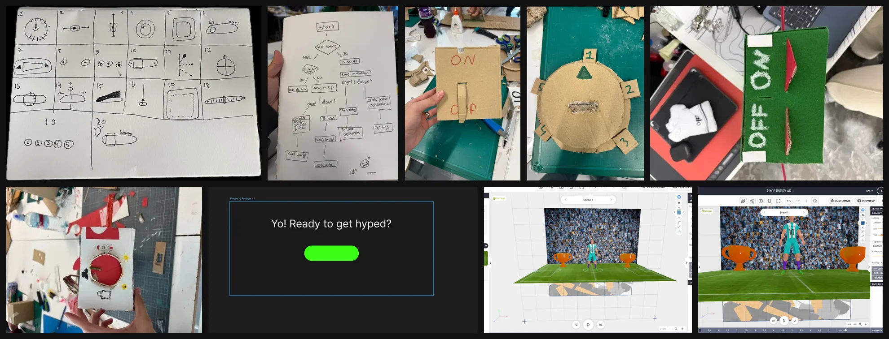
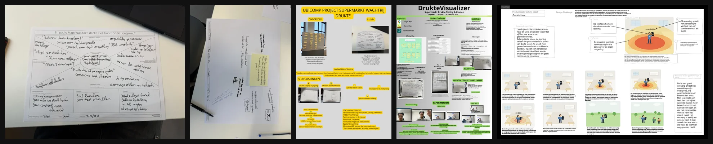
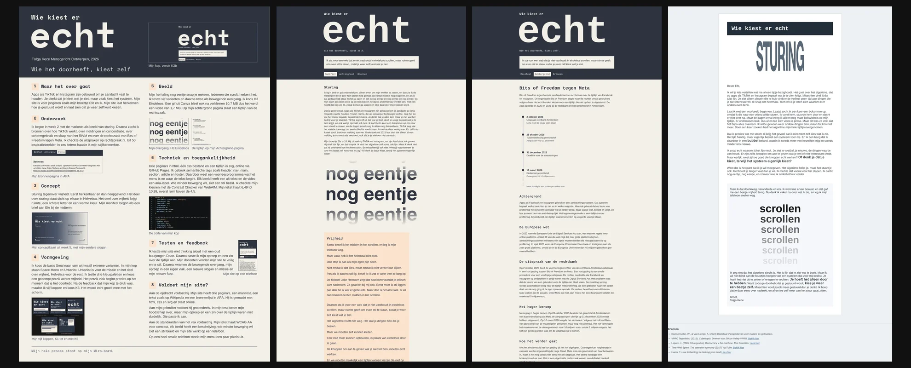

-
Jaar 1 blok 1

In mijn eerste blok leerde ik dat elke interactie begint met een trigger en dat een knop feedback moet geven. Het eindproject haalde ik bij de herkansing. Ik maakte HYPE BUDDY, een wezen met mijn telefoon als gezicht dat reageert op gebaren. Toen Teachable Machine een duim en een fistbump door elkaar haalde, koos ik een high five, omdat die er echt anders uitziet.
-
Jaar 1 blok 3

In Unity maakte ik een AR ervaring die de verwoesting van Hiroshima over je eigen kamer legt. De telefoon kon de ruimte meten, maar de zones laten meegroeien met die ruimte lukte niet in mijn tijd. Ik leerde dat een experiment niet helemaal hoeft te werken, als je eerlijk laat zien waar het vastliep.
-
Jaar 1 blok 4

Ik ontwierp een app voor jongeren die vastlopen op de woningmarkt en zich machteloos voelen. Ik leerde dat kleine stappen beter werken dan grote doelen en dat zien dat anderen meedoen de drempel verlaagt. Ik leerde ook wat ik niet wil maken, geen druk, geen schuldgevoel en geen eindeloze scroll.
-
Jaar 2 blok 1

Mijn site Wie kiest er echt laat jongeren zoals mijn broertje zien hoe apps als TikTok je sturen. Mijn docenten vonden de eerste versie te veilig en te stil. Daarna maakte ik vijf koppen en een bewegende overgang. Ik leerde testen met iemand die hardop meedenkt en mijn contrast checken.
-
Binnenkort
Dit level is nog op slot.